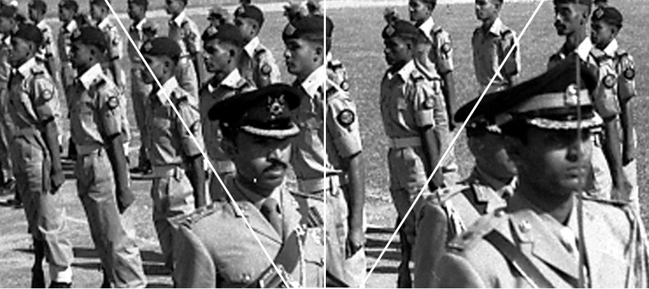

Early History

On the 15th February 1948, the East Bengal Regiment was raised at Kurmitola, Dhaka under the prudent leadership of late Major Mohammad Abdul Gani. Until the Great Liberation War of 1971 there were 8 battalions of the East Bengal Regiment with their remarkable achievements. On night 25 March 1971 Pakistan Army brutally killed hundreds of thousands of innocent Bangali civilians and uniformed personnel. As a result, Bengali soldiers in East Pakistan (Bangladesh) revolted and initiated the liberation war of Bangladesh in March 1971. In a cabinet meeting of the provisional government of Bangladesh held on 11 July 1971, liberation war was structured through dividing the Bangladesh into 11 sectors and organizing Bangladeshi regular forces more on strategy of small group guerrilla actions. Later three regular Infantry Brigades S, K and Z Force were raised to fight conventional battles.